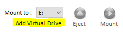
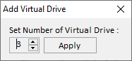

Virtual DriveTo add or remove virtual drives, open the uDiscMounter program from the desktop shortcut by right-clicking it and selecting Run as Administrator. Once the program is open, choose the Add Virtual Drive menu.  The Virtual Drive window will appear, where you can set how many virtual drives you want to add.  Note: Please restart your system after completing this operation. |
| << Prev | 1 2 3 4 5 | Next >> |